猫だって新鮮なオクラがお好き！？ [梅吉]
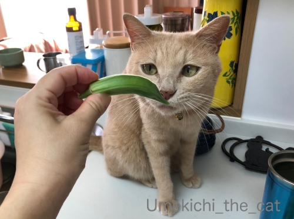
収穫したばかりのオクラちゃんに興味津々の梅吉さん。
キッチンにあるのを転がして遊ぼうとしてましたw
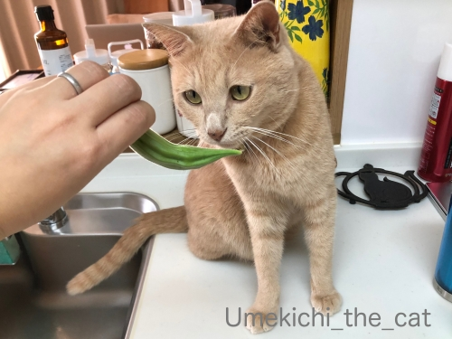
これはおもちゃではないんですよ〜。
それに収穫したてはヘタのあたりのトゲが元気で痛いので気をつけてくださいね。
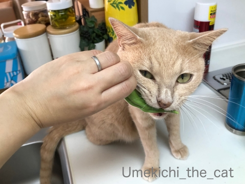
おもちゃじゃない？何奴か確かめるべく、かじってみるべし！！
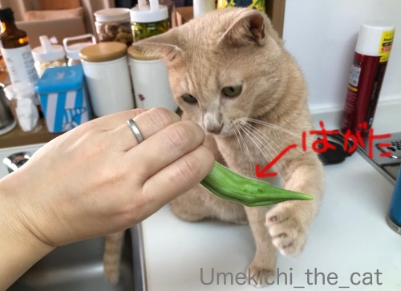
あああ、歯形がすごいです(꒦ິ⌑꒦ີ)
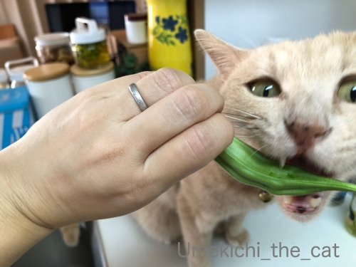
正体不明のものはかじってみる！
梅吉さんの探究心はとどまるところを知りませんwww
歯形付きのオクラは軽く湯通ししてお夕飯のサラダにしました(^_－)☆
プランター栽培のオクラ、どんどん花を咲かせてどんどん実が出来ます。
この暑さ、オクラにとってはウェルカムのようで成長するスピードも速いです。
気が付いた時には巨大化。あまり大きくなったものは硬くて食べられません(⌒-⌒;
早め早めに収穫すれば良いのだけれど暑すぎてベランダに出る気力が湧かず・・・
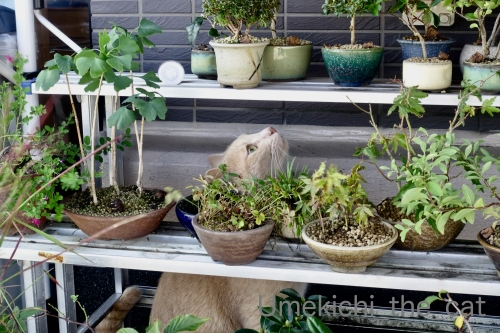
おかーさんはヘタレになってますが梅吉さんはちょっとだけ頑張ってベランダ探検してます。
せっかくベランダに出たんだから広いところでのびのびすれば良いのに盆栽棚の奥に潜ってゴソゴソ・・・
にょろおの痕跡があるのかしら？？？
ベランダに出ているのはほんの短い時間。
すぐに入りたくなって出入りする窓のところにへばりつく姿は笑えますよ(*>艸<)
 ↑ガブッと一押し↑
↑ガブッと一押し↑
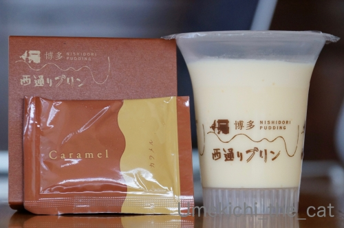
博多 西通りプリンです。chatbleuさん見て、見てー！0(≧▽≦)0
今回はお店に立ち寄れるかどうかわからなかったのでプリンdeチーズはお願いしませんでした。
このプリンはポシェという定番商品。なめらかで濃厚。とっても美味しかったです。
付属のカラメルが苦めで大人の味〜。
このお店、博多の２店舗とワゴン販売。
ワゴン販売はなぜか関東のみ。なぜ？なぜ関西をスルーするの・・・
収穫したばかりのオクラちゃんに興味津々の梅吉さん。
キッチンにあるのを転がして遊ぼうとしてましたw
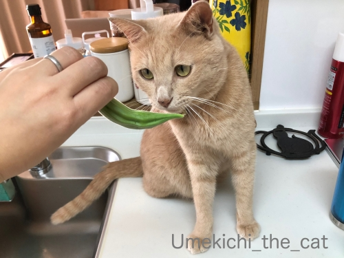
これはおもちゃではないんですよ〜。
それに収穫したてはヘタのあたりのトゲが元気で痛いので気をつけてくださいね。
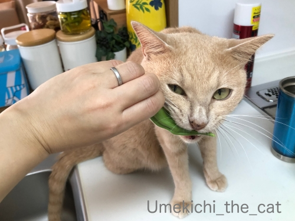
おもちゃじゃない？何奴か確かめるべく、かじってみるべし！！
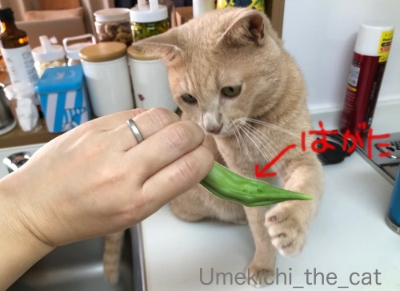
あああ、歯形がすごいです(꒦ິ⌑꒦ີ)
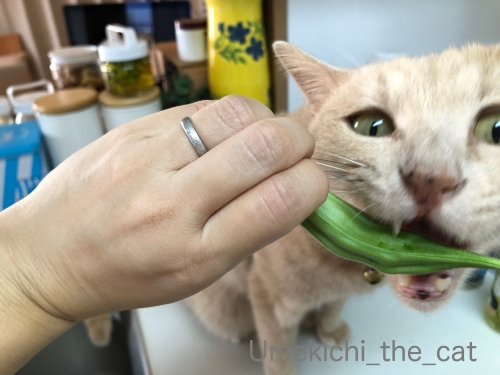
正体不明のものはかじってみる！
梅吉さんの探究心はとどまるところを知りませんwww
歯形付きのオクラは軽く湯通ししてお夕飯のサラダにしました(^_－)☆
プランター栽培のオクラ、どんどん花を咲かせてどんどん実が出来ます。
この暑さ、オクラにとってはウェルカムのようで成長するスピードも速いです。
気が付いた時には巨大化。あまり大きくなったものは硬くて食べられません(⌒-⌒;
早め早めに収穫すれば良いのだけれど暑すぎてベランダに出る気力が湧かず・・・
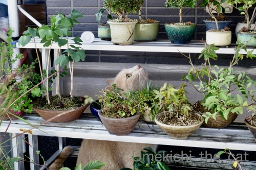
おかーさんはヘタレになってますが梅吉さんはちょっとだけ頑張ってベランダ探検してます。
せっかくベランダに出たんだから広いところでのびのびすれば良いのに盆栽棚の奥に潜ってゴソゴソ・・・
にょろおの痕跡があるのかしら？？？
ベランダに出ているのはほんの短い時間。
すぐに入りたくなって出入りする窓のところにへばりつく姿は笑えますよ(*>艸<)
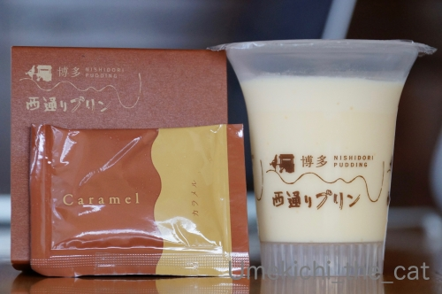
博多 西通りプリンです。chatbleuさん見て、見てー！0(≧▽≦)0
今回はお店に立ち寄れるかどうかわからなかったのでプリンdeチーズはお願いしませんでした。
このプリンはポシェという定番商品。なめらかで濃厚。とっても美味しかったです。
付属のカラメルが苦めで大人の味〜。
このお店、博多の２店舗とワゴン販売。
ワゴン販売はなぜか関東のみ。なぜ？なぜ関西をスルーするの・・・

カフェオレ色の梅吉

梅吉 2023年8月10日 永眠


梅吉と出会った譲渡会

犬猫の理由なき殺処分ゼロ
妄想広告
UMEKICHI 光

爆発的に早い！
時々攻撃的！
Thanks to Mr.Boss365
爆発的に早い！
時々攻撃的！
Thanks to Mr.Boss365

梅吉さんかじるだけで食べないの? 歯応えを確かめたいだけかしら。
窓のところにへばりつく姿もお願いします。
by zombiekong (2019-09-12 00:32)
齧っただけで食べないのか？（ﾟ□ﾟ）
まぁ、オクラはネバネバするからイヤかもね？
by 英ちゃん (2019-09-12 00:43)
猫さんがオクラを喜んで食べる図は
ちょっと想像できません（＾＾；）
by 藤並 香衣 (2019-09-12 01:17)
ベランダは暑くなるでしょうね。
肉球ヤケドしないのかな？＾＾；
by ぽちの輔 (2019-09-12 05:58)
オクラをがぶり。さすが、梅吉さん。
とりあえずにおいを嗅ぐってのはニャンコの習性ですが、梅吉さんはその上、ガブリがつくのが定番ですかねー。
お！見たよ、見たよ(*^◯^*)
ポシェ買ってきてもらったのですね。プリンdeチーズも気になりますよねぇ。
通販でいっちゃうう？？^m^
なんで博多から関西飛び越して関東だけでワゴン販売なんでしょうね。関西には美味しいものがたくさんあるから勝負を避けてる？それとも少しずつ移動していて、関西はまだこれから？
by ChatBleu (2019-09-12 06:33)
猫ってオクラをなどの青物匂いを嗅いでプイッとやるものだと思ってましたが、ガブッとやるんですね。
うちの猫はそんな姿を見せたことがないので以外でしたが、さすがの梅吉さんでもシシトウにはガブッとやりませんよね(^_^;)
by kou (2019-09-12 07:28)
梅吉さん、まさかオクラにも興味を持つとは(°_°)
あっ、ベランダも当然警備対象だから
ベランダでの収穫もちゃんとチェックされたのかも( ^ω^ )
ニャンコ、「どうして暑いのにそこ？」って場所に行きますよねぇ(⌒-⌒; )
by ニッキー (2019-09-12 07:28)
がぶっ！なお顔が良いですね:-)
by tama (2019-09-12 08:00)
梅吉さん、オクラをガブッていますね！
美味しかったのかな？
by ma2ma2 (2019-09-12 09:23)
梅吉さん！すごい探求心です！
噛んで確認とは（笑
by きぃ (2019-09-12 10:10)
オクラってそんなに成長が早いのね。
たまに生協で買ったオクラのなかに、かたいやつがあるの！
それは育ち過ぎちゃったんだねー
居心地の良いベランダだから、にょろおさんも木陰で休んでいるかも？^^
by リュカ (2019-09-12 10:23)
好奇心旺盛な梅吉さん♪♪
オクラって プランターでもどんどん作れるんですね〜
by チャー (2019-09-12 10:45)
歯型付オクラ、プレミアがつきますね(￣▼￣)ﾆﾔｯ
とりあえず齧ってみるって男前だわ～❤
こう暑いと外に長く出るのはムリですよねｗ
もー湿度がひどくてウンザリです(＠ε＠)ﾌﾞｩ
プリン、お土産で買ってきていただいたのですね♪
え？？関西はスルーですか(｡í ω ì｡)ｼｮﾎﾞｰﾝ
関西人を怒らすと怖いぞーーーー(笑)
by カトリーヌ (2019-09-12 10:54)
こんにちは。
梅吉くん、クンクン、期待に応えてくれますね。
オクラを噛む表情？良いですね。やめられない感じです（笑）
オクラが豊作みたいですね。うれしい悲鳴です。
盆栽！！沢山ありますね。梅吉くん多彩な趣味を持っている感じ？
にょろお君の捜索で、落とさないでね？（笑）
博多西通りプリン「大人の味」は美味しそうです！！
「関西をスルー」は深い理由がありそうです！？(=^･ｪ･^=)
by Boss365 (2019-09-12 11:59)
オクラについた歯型、私の腕につくのと同じだ～(≧▽≦)
梅吉さん暑くても平気なのね♪
にょろおさんとバッタリ遭遇があるかもしれません！！
ウチのも暑いのに日の当たる窓辺いることがあります。
案外暑さに強いのか、毛皮のせいで暑いと感じるまで時間がかかるのか、下僕とは「適温」がずいぶん違う・・^^;
プリン美味しそう！
カラメルが底にたまっているのより、かけて食べる方が断然好きです(#^^#)
by ゆきち (2019-09-12 12:19)
自家栽培のオクラ～いいですね。
梅吉さんがかじったものもきっちりサラダにして召し上がる♪
梅吉さんへの愛を感じます(^^
昨日の雨で今朝はちょっと涼しかったのです。
このままじわっと秋になっていくのでしょうか。
博多西通りプリン、それは地名？かな。
プリンは大好きなので３つくらいなら食べ比べできそうな気がしますぅｗ
by marimo (2019-09-12 14:18)
猫も野菜が不足してるのかな？。
by 旅爺さん (2019-09-12 18:37)
オクラをハグハグしたら歯が磨けて気持いいのかな？^^)
美味しそうなプリンですが関西はスルーなのですね。
ひょっとして関西はモロゾフが有名だから？
そんなことないですね。^^;;
by yes_hama (2019-09-12 21:43)
梅吉さん、オクラをがぶり！
興味津々のお顔が可愛いです。
猫の好きなもの、けっこう変わったのあるけど、オクラに歯型は経験ないです＾m＾
盆栽だなの奥で見上げてるのも可愛い～＾＾
by sana (2019-09-13 00:53)
オクラに興味津々な梅吉さん＼(^o^)／
噛んだ！出した！また噛んだ！
歯形の付き具合で新鮮さが分かるかもしれませんね(笑)
by yamatonosuke (2019-09-13 01:07)
梅吉さん、盆栽棚にぶつからない器用ですね。
by ニコニコファイト (2019-09-13 07:18)
怪しいものには、とりあえず噛んでおくのねーσ(^_^;)
暑さもようやく一段落で、やれやれの毎日です！
by よーちゃん (2019-09-13 07:21)
怪しい段階で噛んでしまう猫ってすごいですよね。悪いものやったらどないすんねん！って思ってしまう。うちはきなこがコレですわ～すぐ噛んで確かめる。ナノはひたすら嗅ぎまくる。延々延々嗅ぐのでこっちが先に飽きてしまい撤収(;^ω^)
by palpal (2019-09-14 09:13)
梅吉さん、にがにがネバネバは大丈夫なのかな？
オクラは劇暑でも成長ストップしないのですね！
by ふにゃいの (2019-09-14 23:18)